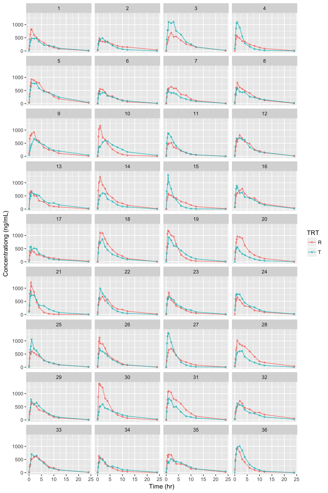

NonCompart 패키지를 사용해서 2x2 생동성시험의 분산분석 등을 손쉽게 해주는 패키지입니다. 지원하는 계산은 다음과 같습니다.
| parameters | statistics |
|---|---|
AUClast |
Analysis of variance, between and within subject variability, least square means, confidence interval, and sample size |
Cmax |
Analysis of variance, between and within subject variability, least square means, confidence interval, and sample size |
Tmax |
Wilcoxon Signed-Rank Test and Hodges-Lehmann Estimate |
설치
install.packages('devtools')
devtools::install_github('asancpt/ncarbe')실행
예제 데이타 (시뮬레이션 데이타)
2x2 생동성시험 디자인으로 36명의 데이타를 생성하여 시뮬레이션 한 것입니다. (배균섭 교수님 pk1coma.R 사용)
file <- system.file('example', 'beConc.csv', package = 'ncarbe')
concData <- read.csv(file, as.is = TRUE)
head(concData)## SUBJ GRP PRD TRT nTIME TIME CONC
## 1 1 RT 1 R 0.00 0.02 63.42
## 2 1 RT 1 R 0.25 0.24 432.76
## 3 1 RT 1 R 0.50 0.51 622.88
## 4 1 RT 1 R 0.75 0.80 809.93
## 5 1 RT 1 R 1.00 1.02 824.34
## 6 1 RT 1 R 2.00 2.04 602.22자료 탐색
그림을 그려보면 다음과 같습니다.
library(ggplot2)
library(dplyr)
concData %>%
ggplot(aes(x = TIME, y = CONC, group = TRT, color = TRT)) +
geom_line(size = 0.5, alpha = 0.8) +
geom_point(size = 1, alpha = 0.5) +
xlab('Time (hr)') +
ylab('Concentrationg (ng/mL)') +
facet_wrap( ~ SUBJ, ncol = 4)
생동성 분석
beNCA() 함수를 사용하여 분석한 결과입니다.
method = ‘kbe’
library(ncarbe)
beNCA(concData) # method = 'kbe'##
##
## [AUClast]
##
## $`Analysis of Variance`
## SS DF MS F p
## SUBJECT 35.7817072 35 1.0223345 1.854676 0.037320327
## GROUP 1.1390308 1 1.1390308 1.117900 0.297825788
## SUBJECT(GROUP) 34.6426764 34 1.0189022 1.848449 0.038831903
## PERIOD 4.1989873 1 4.1989873 7.617625 0.009244748
## DRUG 0.7021705 1 0.7021705 1.273848 0.266947114
## ERROR 18.7414811 34 0.5512200 NA NA
## TOTAL 58.9756619 71 NA NA NA
##
## $`Between and Within Subject Variability`
## Between Subject Within Subject
## Variance Estimate 0.2338411 0.55122
## Coefficient of Variation, CV(%) 51.3267693 85.75365
##
## $`Least Square Means`
## Reference Drug Test Drug
## Geometric Means 31.20441 25.5401
##
## $`90% Confidence Interval`
## Lower Limit Point Estimate Upper Limit
## 90% CI for Ratio 0.6062815 0.8184771 1.10494
##
## $`Sample Size`
## True Ratio=1 True Ratio=Point Estimate
## 80% Power Sample Size 96 6538
##
##
##
## [Cmax]## Warning in sqrt(exp(sig2b) - 1): NaN이 생성되었습니다## $`Analysis of Variance`
## SS DF MS F p
## SUBJECT 22.1199814 35 0.6319995 0.6475704 0.89703843
## GROUP 0.2047080 1 0.2047080 0.3175901 0.57675784
## SUBJECT(GROUP) 21.9152734 34 0.6445669 0.6604475 0.88422171
## PERIOD 3.6728929 1 3.6728929 3.7633843 0.06071806
## DRUG 0.1136911 1 0.1136911 0.1164922 0.73497096
## ERROR 33.1824629 34 0.9759548 NA NA
## TOTAL 58.9756619 71 NA NA NA
##
## $`Between and Within Subject Variability`
## Between Subject Within Subject
## Variance Estimate -0.165694 0.9759548
## Coefficient of Variation, CV(%) NaN 128.5962569
##
## $`Least Square Means`
## Reference Drug Test Drug
## Geometric Means 26.30688 28.51506
##
## $`90% Confidence Interval`
## Lower Limit Point Estimate Upper Limit
## 90% CI for Ratio 0.7270811 1.083939 1.615946
##
## $`Sample Size`
## True Ratio=1 True Ratio=Point Estimate
## 80% Power Sample Size 169 298
##
##
##
## [Tmax]
##
## $`Wilcoxon Signed-Rank Test`
## p-value
## 0.3286283
##
## $`Hodges-Lehmann Estimate`
## Lower Limit Point Estimate Upper Limit
## 90% Confidence Interval -2.00000 1.0000 4.0000
## 90% Confidence Interval(%) 87.11261 106.4437 125.7748method = ‘nlme’
beNCA(concData, method = 'nlme')## $Confidence.Interval
## # A tibble: 2 x 4
## parameter `Lower limit of 90% CI` `T/R ratio` `Upper limit of 90% CI`
## <chr> <dbl> <dbl> <dbl>
## 1 Cmax 0.753 1.08 1.56
## 2 AUClast 0.606 0.818 1.10Reference
Bae K (2018). NonCompart: Noncompartmental Analysis for Pharmacokinetic Data. R package version 0.4.2, https://CRAN.R-project.org/package=NonCompart.
Bae K, Han S (2018). ncarbe: Perform BE Test Using NonCompart Package. R package version 0.1.1.
Pinheiro J, Bates D, DebRoy S, Sarkar D, R Core Team (2018). nlme: Linear and Nonlinear Mixed Effects Models. R package version 3.1-137, https://CRAN.R-project.org/package=nlme.
devtools::session_info()
devtools::session_info()## Session info -------------------------------------------------------------## setting value
## version R version 3.5.0 (2018-04-23)
## system x86_64, darwin17.5.0
## ui unknown
## language (EN)
## collate C
## tz Asia/Seoul
## date 2018-06-07## Packages -----------------------------------------------------------------## package * version date source
## assertthat 0.2.0 2017-04-11 CRAN (R 3.5.0)
## backports 1.1.2 2017-12-13 CRAN (R 3.5.0)
## base * 3.5.0 2018-05-02 local
## bindr 0.1.1 2018-03-13 CRAN (R 3.5.0)
## bindrcpp * 0.2.2 2018-03-29 CRAN (R 3.5.0)
## cli 1.0.0 2017-11-05 CRAN (R 3.5.0)
## colorspace 1.3-2 2016-12-14 CRAN (R 3.5.0)
## commonmark 1.5 2018-04-28 CRAN (R 3.5.0)
## compiler 3.5.0 2018-05-02 local
## crayon 1.3.4 2017-09-16 CRAN (R 3.5.0)
## datasets * 3.5.0 2018-05-02 local
## desc 1.2.0 2018-05-01 CRAN (R 3.5.0)
## devtools 1.13.5 2018-02-18 CRAN (R 3.5.0)
## digest 0.6.15 2018-01-28 CRAN (R 3.5.0)
## dplyr * 0.7.5 2018-05-19 CRAN (R 3.5.0)
## evaluate 0.10.1 2017-06-24 CRAN (R 3.5.0)
## fs 1.2.2 2018-03-21 CRAN (R 3.5.0)
## ggplot2 * 2.2.1 2016-12-30 CRAN (R 3.5.0)
## glue 1.2.0 2017-10-29 CRAN (R 3.5.0)
## graphics * 3.5.0 2018-05-02 local
## grDevices * 3.5.0 2018-05-02 local
## grid 3.5.0 2018-05-02 local
## gtable 0.2.0 2016-02-26 CRAN (R 3.5.0)
## htmltools 0.3.6 2017-04-28 CRAN (R 3.5.0)
## knitr 1.20 2018-02-20 CRAN (R 3.5.0)
## labeling 0.3 2014-08-23 CRAN (R 3.5.0)
## lattice 0.20-35 2017-03-25 CRAN (R 3.5.0)
## lazyeval 0.2.1 2017-10-29 CRAN (R 3.5.0)
## magrittr 1.5 2014-11-22 CRAN (R 3.5.0)
## MASS 7.3-50 2018-04-30 CRAN (R 3.5.0)
## memoise 1.1.0 2017-04-21 CRAN (R 3.4.2)
## methods * 3.5.0 2018-05-02 local
## munsell 0.4.3 2016-02-13 CRAN (R 3.5.0)
## ncarbe * 0.1.1 2018-06-07 local
## nlme 3.1-137 2018-04-07 CRAN (R 3.5.0)
## NonCompart 0.4.2 2018-05-17 CRAN (R 3.5.0)
## pillar 1.2.3 2018-05-25 CRAN (R 3.5.0)
## pkgconfig 2.0.1 2017-03-21 CRAN (R 3.5.0)
## pkgdown 1.1.0.9000 2018-06-07 Github (r-lib/pkgdown@bcf6299)
## plyr 1.8.4 2016-06-08 CRAN (R 3.5.0)
## purrr 0.2.5 2018-05-29 CRAN (R 3.5.0)
## R6 2.2.2 2017-06-17 CRAN (R 3.5.0)
## Rcpp 0.12.17 2018-05-18 CRAN (R 3.5.0)
## rlang 0.2.1 2018-05-30 CRAN (R 3.5.0)
## rmarkdown 1.9 2018-03-01 CRAN (R 3.5.0)
## roxygen2 6.0.1 2017-02-06 CRAN (R 3.5.0)
## rprojroot 1.3-2 2018-01-03 CRAN (R 3.5.0)
## scales 0.5.0 2017-08-24 CRAN (R 3.5.0)
## stats * 3.5.0 2018-05-02 local
## stringi 1.2.2 2018-05-02 CRAN (R 3.5.0)
## stringr 1.3.1 2018-05-10 CRAN (R 3.5.0)
## tibble 1.4.2 2018-01-22 CRAN (R 3.5.0)
## tidyselect 0.2.4 2018-02-26 CRAN (R 3.5.0)
## tools 3.5.0 2018-05-02 local
## utf8 1.1.4 2018-05-24 CRAN (R 3.5.0)
## utils * 3.5.0 2018-05-02 local
## withr 2.1.2 2018-03-15 CRAN (R 3.5.0)
## xml2 1.2.0 2018-01-24 CRAN (R 3.5.0)
## yaml 2.1.19 2018-05-01 CRAN (R 3.5.0)